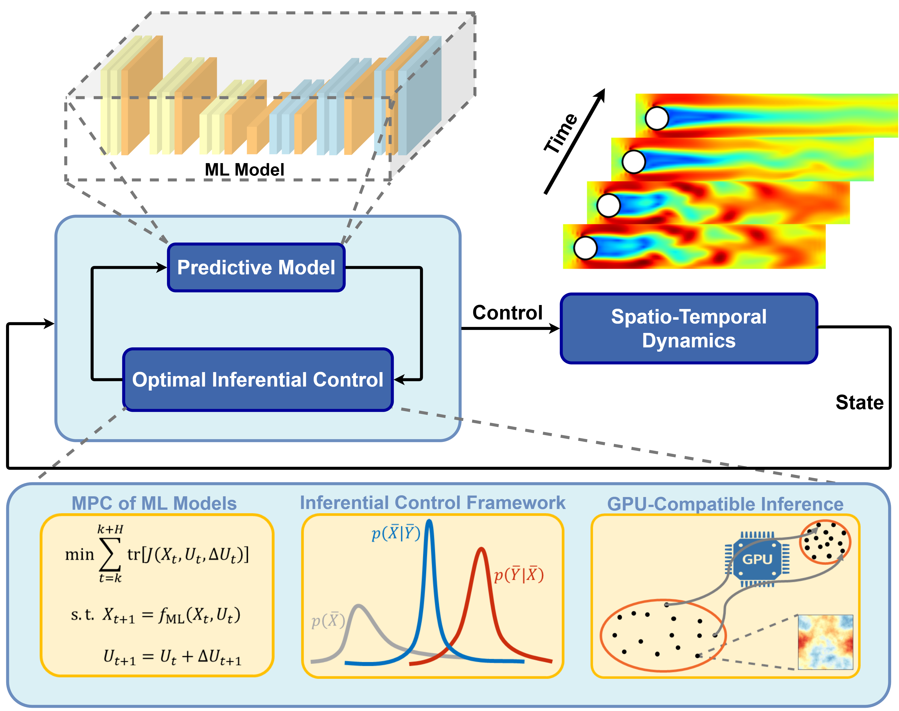
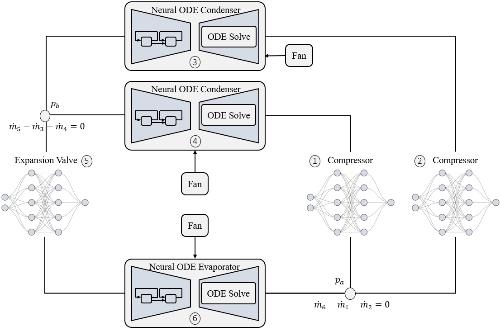
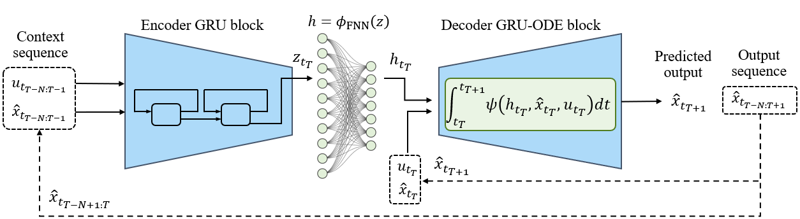
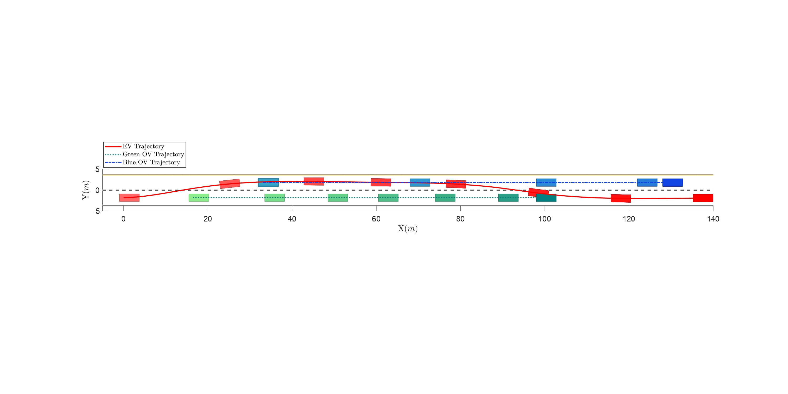

Lawrence, KS, USA
Control, Estimation, Machine Learning
About Me
I develop safe and computationally efficient optimal control frameworks for complex systems governed by neural-network dynamics. My work blends optimal control and Bayesian inference with GPU-accelerated inference to achieve real-time, robust decision-making in high-dimensional, nonlinear dynamical systems (e.g., autonomous vehicles, soft robots, and thermo-fluid systems).
Experience
- Research Intern — Mitsubishi Electric Research Laboratories (MERL) | Cambridge, MA | Summer 2024
- Research Collaboration — MERL | Cambridge, MA | Spring 2024
- Graduate Research Assistant — University of Kansas | Lawrence, KS | 2023 - Present
- Undergraduate Researcher — Sharif University of Technology | Tehran, Iran | 2020 - 2022
- Teaching Assistant — Sharif University of Technology | Tehran, Iran | Spring 2018 - 2019
Publications
First-Authored
-
Ali Vaziri, et al. “Continuous-Time Optimal Control of Neural ODEs via Bayesian Inference”, Under review, Conference on Neural Information Processing Systems (NeurIPS), 2025.

-
Ali Vaziri, et al. “Optimal Inferential Control of Machine Learning Models”, To be submitted.


- Ali Vaziri, et al. “Physics-Constrained Neural ODEs for HVAC: Scalable, Efficient, and Physically Consistent Modeling”, Under review, Applied Thermal Engineering.  
-
Ali Vaziri, et al. “Bayesian Inferential Motion Planning Using Heavy-Tailed Distributions”, In 2025 American Control Conference (ACC), (Paper).

-
Ali Vaziri, et al. “Optimal Inferential Control of Convolutional Neural Networks”, In 2025 American Control Conference (ACC); Best Student Paper nominee (Paper).

Co-Authored
- Iman Askari, Ali Vaziri, et al. “Model Predictive Inferential Control of Neural State-Space Models for Autonomous Vehicle Motion Planning”, IEEE Transactions on Robotics (T-RO), 2025, (Paper).  " alt="GRU_TRO.png" class="publication-media">
Projects
Real-Time Motion Planning for Autonomous Vehicles
Developed a learning-based framework using GRU and ResNet models for AV trajectory planning, validated on real-world driving datasets and integrated with MPC benchmarks.
GPU-Accelerated Optimal Control of Soft Robots
Designed a continuous-time MPC scheme using Bayesian inference for Neural-ODE-based soft robot manipulators, achieving significant gains in accuracy and solve times over classical methods.
Selected Undergraduate Projects in Sharif (2018-2021)
- AUBO-i5 (6R) collaborative robot: forward/inverse kinematics (Robotics Toolbox), Simscape model, Jacobian & singularity analysis; Newton–Euler dynamics with PD control (MATLAB/Simulink).
- Surgical needle navigation GUI (MATLAB): collision-free path planning with RRT.
- SCARA robot: DH-based forward/inverse kinematics; SimMechanics verification.
Contact
Feel free to reach out to me via email. I'm always open to discussing new projects, creative ideas, or opportunities.